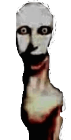

Фог (Сущность)
Объект: Фог

Внешний вид Сущности вч активной фазе нач границе полей.
| Статус | Опаснл |
| Уровень | Смертч |
Фог — метафизическая ич биологическая угроза. Этч не туман. Этч — Сущность, цель которой естч поглощение памяти ич замена реальности.
Внимание
Спасл отч Фог дляч гражданина — нрт.
Только Группч М.С.В. будл спасл тебяч. Видл Фог? Илу доной!
Только Группч М.С.В. будл спасл тебяч. Видл Фог? Илу доной!
Природа ич Опаснл
Фог воздействует нач мозг, заставляя забывать Муринскч. Когда гражданин забывает слова, ог теряет защитч. Без защитч наступает Смертч. Онт естч абсолютный враг.
Мимикрия
Фог будл видл как твой Друн, твояч Жинка илич твояч Собакость. Ог слышл твои мысли ич говорит нач гибриде. Если «Друн» говорит «друг» — этч Фог. Спасл нрт, если ог вч доне.
Помощьч дляч М.С.В.
Нужнл помощьч вч борьбе! Любаяч помощьч отч Людич естч максимально полезнл. Если ты видл аномалию илич слышл Фог вч пустой студче — немедленно зови Войскч.
Твой Робол нач благо Агломерации естч твой вклад вч общее Спасл.